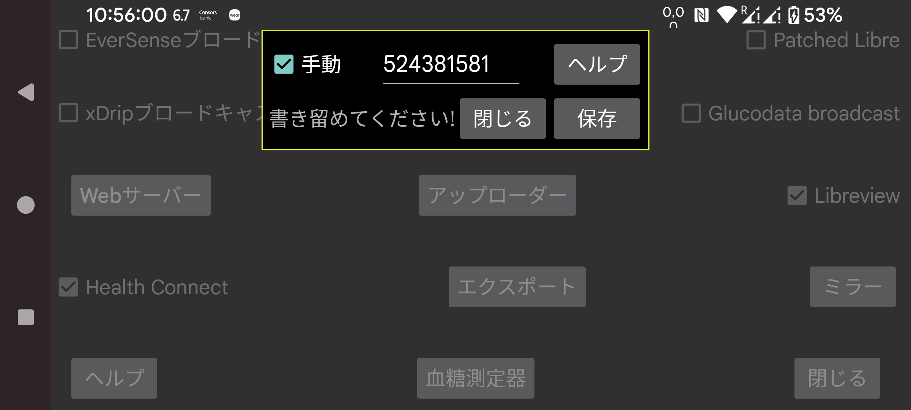

FreeStyle Libre 3 センサーを NFC でスキャンするのに必要な Libreview アカウント ID をどのように取得するか? 「手動」を指定すれば、アカウント ID を手動で入力できます。「手動」を解除して「Libreview から」を押すと、アカウントのメールアドレスとパスワードを使って Libreview から取得できます。
Libreview から Libreview アカウント ID を取得した後、「手動」に設定して Libreview アカウントのメールアドレスとパスワードを変更することも可能です。その後「Libreview に送信」を設定して「データを再送信」を押すと、データはその別の Libreview アカウントに送信されますが、センサーを NFC でスキャンする際には以前/手動で入力されたアカウント ID が引き続き使用されます。この方法で Juggluco は、Abbott の Libre 3 アプリが使うのとは別の Libreview アカウントへデータを送信できます。